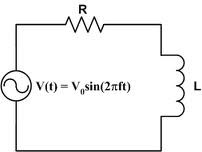

Series and parallel ac circuits are extensively used in electrical and electronics engineering and hence their analysis is very important. These circuits consists of combinations of R, L and C .In this article we will discuss about series RL circuit. We know that a.c quantities being vector (have both magnitude and direction). So either polar or rectangular or both forms of representations are used in analysing a.c circuits.
Let us see that what happens if we R-L series circuit is energised by a current source.
Capital letters like I ,V represents r.m.s quantity , capital letters with suffix max represents maximum values and small alphabets like i, v represents instantaneous value.

i = Im sinωt
Let vR and vL be the voltage drop at steady state across R and L elements respectively such as the net voltage drop v across the circuit is the vectorial summation of vR and vL .
Thus vR = iR = R Im sinωt
vL = L di/dt = L d/dt ( Im sinωt )
= ω L Imcosωt
= ω L Im sin(ωt + 90)
The current i lags the voltage v by an angle θ. The impedance of this circuit (RL series circuit) is complex and is given by
Z = R + j ωL
= √ R2+(ωL)2 ∠ tan-1 ωL/R.
 by
by {kind=link}